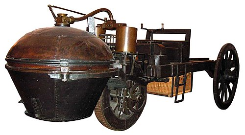
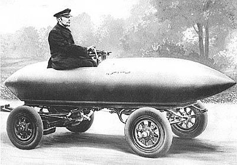
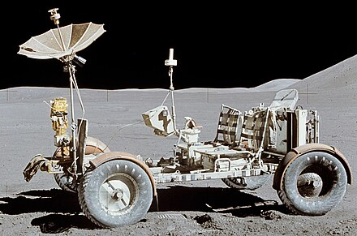
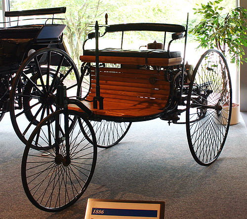
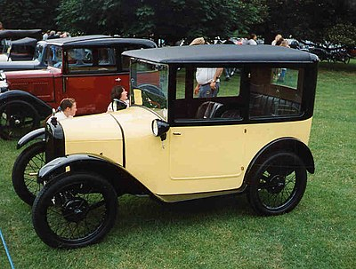

Istoria automobilului începe în 1769, odată cu crearea automobilului cu motor cu abur și care putea transporta persoane la bord. În 1806, apar vehiculele dotate cu motoare cu ardere internă care funcționau cu combustibil lichid. În jurul anului 1900, apar și vehiculele cu motor electric.
Automobilul se impune cu rapiditate în țările dezvoltate ca principal mijloc de transport. Industria constructoare de automobile ia un avânt puternic mai ales după cel de-al Doilea Război Mondial. Dacă la începutul secolului XX existau câteva sute de mii, la începutul perioadei postbelice existau pe plan mondial peste 500.000 de automobile, ca în 2007 producția mondială anuală să depășească 70 de milioane de unități.

Primele automobile
Vehiculele cu abur
Primul vehicul acționat de abur poate fi considerat cel realizat în jurul anului 1672 de către călugărul iezuit flamand Ferdinand Verbiest. Acesta era un fel de jucărie pentru împăratul Chinei, deci incapabilă să transporte pasageri.
Automobilele electrice
În 1828, maghiarul Ányos Jedlik realizează un model primitiv de motor electric și o dată cu acesta și un vehicul propulsat electric. În 1834, fierarul american Thomas Davenport, inventatorul motorului de curent continuu, realizează un vehicul propulsat de acest motor care se deplasa pe un ghidaj circular înzestrat cu conductori electrici de alimentare.
În 1835, olandezii Sibrandus Stratingh și Christopher Becker realizează un automobil electric în miniatură, acționat de baterii nereîncărcabile. În 1838, scoțianul Robert Davidson construiește o locomotivă electrică ce atinge 6 km/h. Între anii 1832 și 1839, compatriotul său, Robert Anderson realizează un vehicul electric acționat de baterii nereîncărcabile.
În 1899, belgianul Camille Jenatzy depășește 100 km/h cu un vehicul electric denumit Jamais Contente, de formă aerodinamică asemănătoare unui obuz.


Motoarele cu ardere internă
Primele încercări de construire a unor astfel de motoare au fost sortite eșecului, deoarece combustibilii fluizi necesari arderii încă nu apăruseră. Un exemplu ar fi dispozitivul cu cilindru și piston realizat de Christian Huygens și asistentul său, Denis Papin, care poate fi considerat o primă formă a motorului cu ardere internă.[7]
În 1807, elvețianul François Isaac de Rivaz realizează un motor cu ardere internă care utiliza un amestec de hidrogen și oxigen și aprinderea se efectua prin scânteie electrică


Automobilul viitorului
Industria auto a viitorului trebuie să răspundă unor cerințe ca: spații tot mai mici de parcare și de deplasare, utilizarea energiei regenerabile, preț redus de fabricație, poluare redusă.